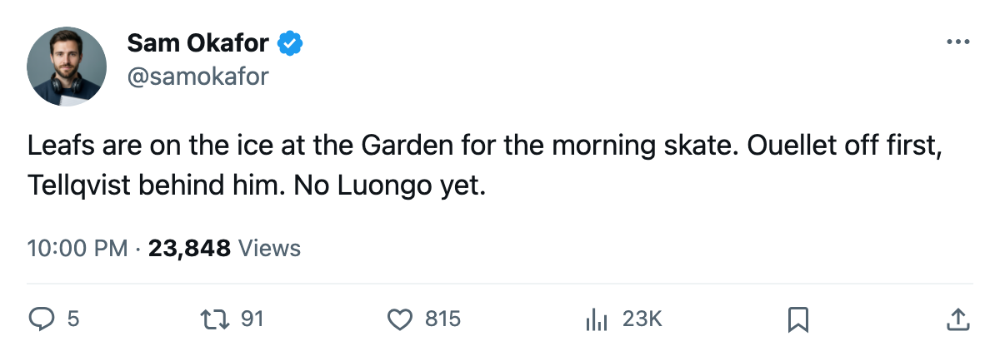

TOR
TORLeafs at the Garden: a 3-1 loss at home, and a Conn Smythe winner who did not dress
Toronto has 4 points from 3 games and plays at New York tonight. Roberto Luongo was not in uniform Friday, and no body part is listed against him.
 Sam OkaforLeafs beat reporter · Queen City Telegram
Sam OkaforLeafs beat reporter · Queen City Telegram
The piece
Toronto lost 3-1 to  Pittsburgh Penguins at home Friday, the first defeat of its title defence, and plays at
Pittsburgh Penguins at home Friday, the first defeat of its title defence, and plays at  New York Rangers tonight with 4 points from 3 games.
New York Rangers tonight with 4 points from 3 games.
The crease is what follows the club to the Garden.  Roberto Luongo95 did not dress Friday. The league's injured list carries no body part against him.
Roberto Luongo95 did not dress Friday. The league's injured list carries no body part against him.
Maxime Ouellet86 started and allowed 3 goals. Pittsburgh put 22 shots on him, and Toronto answered with 24 and scored once. Mikael Tellqvist73 dressed as the backup for the first time this season.
| date | opponent | at | gf | ga | result |
|---|---|---|---|---|---|
| 2005-10-10 | PIT | away | 4 | 0 | W |
| 2005-10-12 | OTT | home | 4 | 1 | W |
| 2005-10-14 | PIT | home | 1 | 3 | L |
Up front
Toronto's lineup has Petr Chlup87 on the second line and  Brad Richards87 on the third. Chlup is 19, plays 20.0 minutes a night and has 2 points in 3 games. Richards, at $6.70M for 4 more years, has 1 point at 12.3 minutes.
Brad Richards87 on the third. Chlup is 19, plays 20.0 minutes a night and has 2 points in 3 games. Richards, at $6.70M for 4 more years, has 1 point at 12.3 minutes.
Old rooms
New York Rangers has 5 points from 3 games, 1-0-1, with 9 goals scored and 8 allowed.  Dale Purinton72 is out with a back, hurt in the window between 2005-10-13 and 2005-10-15, and returns 2005-11-17.
Dale Purinton72 is out with a back, hurt in the window between 2005-10-13 and 2005-10-15, and returns 2005-11-17.
Two men meet clubs they left on 2005-05-31.  Kenny Jonsson82 of the Rangers left Toronto.
Kenny Jonsson82 of the Rangers left Toronto.  Jamie Lundmark81 of the Leafs left New York and has 1 game this season.
Jamie Lundmark81 of the Leafs left New York and has 1 game this season.
Toronto goes from the Garden to Phoenix at home Monday, then to Montreal on Wednesday.
